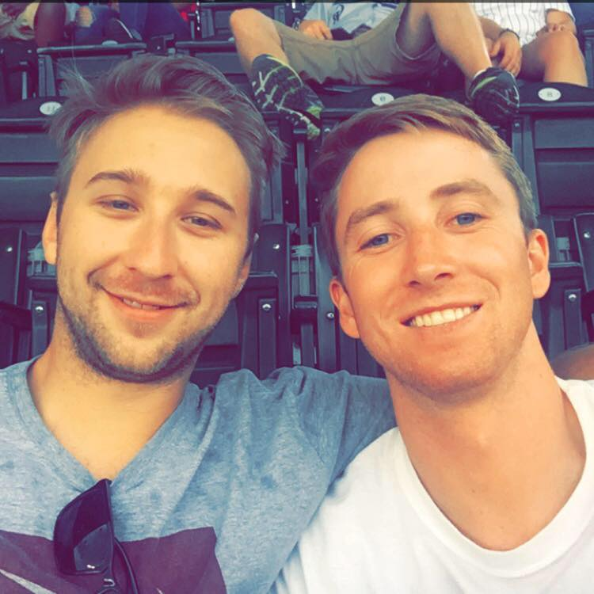

About Me

My name is Matt Pitner and I was born and raised in Denver Colorado. I am currently enrolled in the Full Stack Web Development program at Denver University. My interest in programming/computers started while I was in Highschool. I went through Thomas Jeffersons Computer Magnet program and learned the basics of programming. After studying music at various colleges and working as a technician at Honda, I decided it was time for me to take my education the the next level and start my programming career. After learning basic HTML, CSS and Javascript online through various websites and resources I started looking into bootcamps. The DU full stack program stuck out to me because it seemed to cover a lot of content which is just what I need to start my foundation in programming.
Although the program is fast paced and daunting at times, I still feel like I am learning a ton and expanding my knowledge on programming immensley. My instructor and all TA's have been very helpful and supportive throughout the course. I still have a lot to learn and look forward to continuing my knowledge in computer programming.